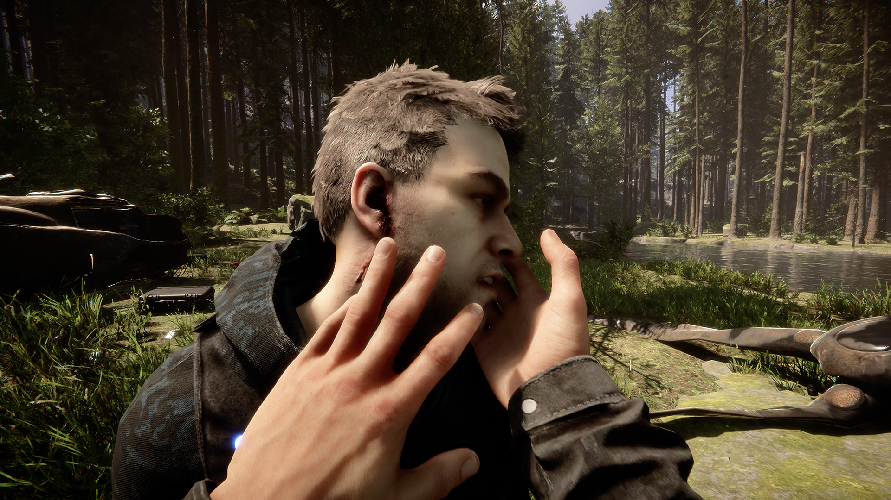
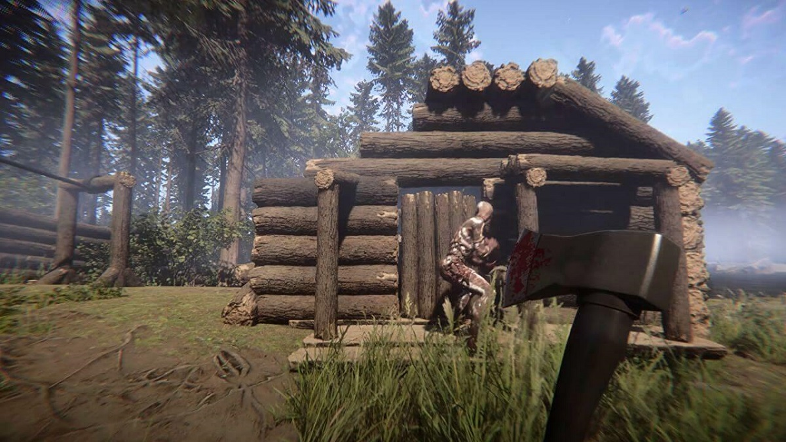

The Forest to gra survivalowa, w której musisz przetrwać po katastrofie lotniczej na tajemniczej wyspie, pełnej niebezpiecznych istot. Twoim celem jest przetrwanie, eksploracja i budowanie schronienia.
Zbieranie zasobów: Zbieraj drewno, kamienie, rośliny i inne przedmioty, które pozwolą Ci zbudować schronienie, broń i narzędzia.
Budowa: Budowanie jest kluczowe. Zacznij od prostego schronienia, później rozwijaj bazę, tworząc pułapki na dzikie zwierzęta i wrogów.
Jedzenie i picie: Musisz dbać o jedzenie i nawodnienie. Poluj na zwierzęta, zbieraj jagody i uzupełniaj wodę w źródłach.
Kanibale: Na wyspie żyją agresywne kanibale, które mogą atakować Cię o każdej porze. Unikaj walki, jeśli to możliwe, ale jeśli musisz się bronić, używaj broni, pułapek lub ognia.
Mutanty: W miarę postępów w grze spotkasz potężniejszych wrogów, takich jak mutanty, które mogą wymagać zaawansowanej broni do pokonania.

